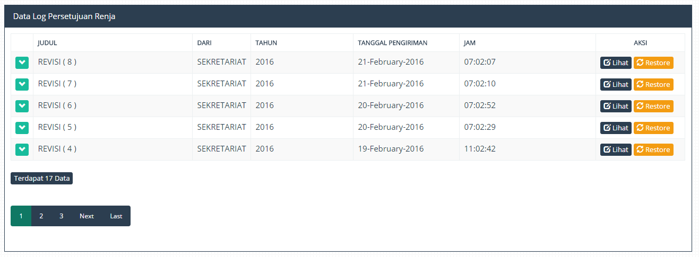
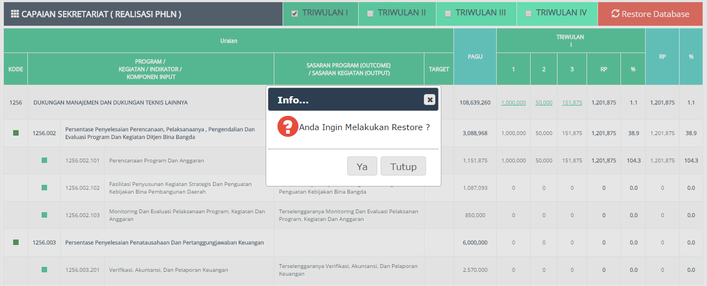
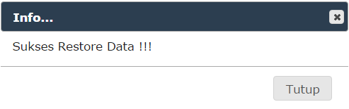

Proses Restore dilakukan bila data renja yang tersedia mengalami beberapa kendala / masalah yang di luar expectasi user , misalkan Data Capaian Rusak karena sesuatu , maka proses ini bisa dilakukan guna menyelamatkan Data Capaian Tersebut. Berikut adalah tahapan melakukan Restore Data Capaian Pada Aplikasi.
1. Masuk ke Menu LOG.
2. Klik Menu "Log Persetujuan Capaian".
3. Klik Menu Lihat / Restore.

Gambar Menu Log Persetujuan Capaian
5. Klik Tombol Restore Di Pojok Kanan Atas .
6. Klik Tombol ya Pada Dialog Komfirmasi.

Gambar Proses Restore
7. Bila Proses Sudah Selesai maka Notifikasi Sukses Akan Keluar.

Gambar Notifikasi Sukses
Created with the Personal Edition of HelpNDoc: Full-featured Documentation generator